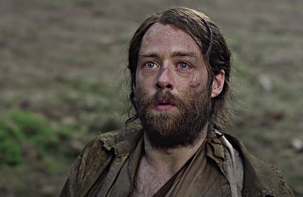

This is Ian Murray, nephew of Jamie and also his son ny heart. Ian leaves his family in Scotland to come to America with his uncle Jamie.
This is Brianna, the daughter of Jamie and Claire. She was raised in America in the future with Claire and her first husband. But soon after Claire goes back in time through the stones Brianna follows suit.
This is Brianna's husband. He follows her through the stones to "ensure" her safety but he is very misogynistic and annoying for the first few books, he does improve once their son is older.